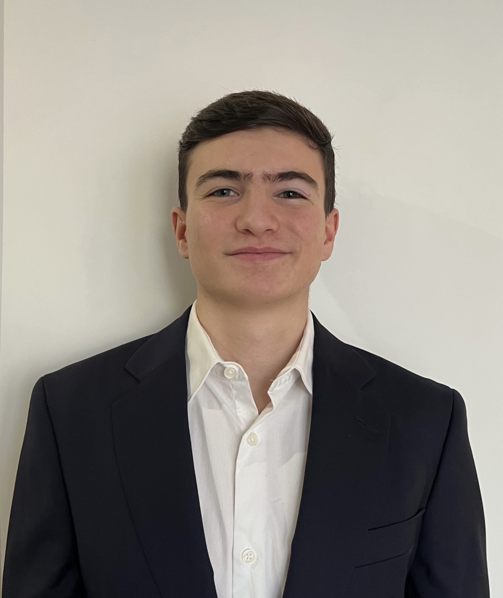

Hello, I'm Mahdy 👋
Hi! Welcome on my profile page, get to know me better by visiting this website that I entirely made myself!
Who am I ?
As you already knows, my name is Mahdy, I'm 18 years old and I'm French with Syrian origins from my father. Recently I left my two big brother to pursue my studies. Indeed I'm currently living near Paris.
here take a look at the beautiful city that I left to pursue my studies :(My academic career 🎓

After a scientific high school diploma with the specialties of mathematics, physics-chemistry and the optional specialty of expert mathematics, I passed the selection to complete a bachelor's degree in business administration at ESSEC Business School. I really enjoy this new studies environment and i am trully glad of my orientation choice
if you want to learn more about ESSECMy interests
Firstly, since I was a child, I love Football, either practicing or watching. This help me threw all my journey to develop and strengthen my team spirit and pushed me to always look for the best possible performance. When I was a child, I was particularly amazed by the major international competitions.
2014 world cup in brazil was something else 🤩_________________________________________________
Furthermore, I really like traveling, in fact I am lucky to have been able to visit many countries. I have a particular attraction to Middle Eastern countries. My favorite destination was Oman and its capital Muscat.
find photos of this magnificent place here